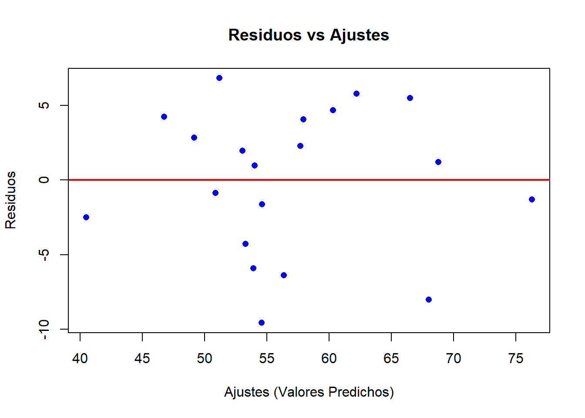
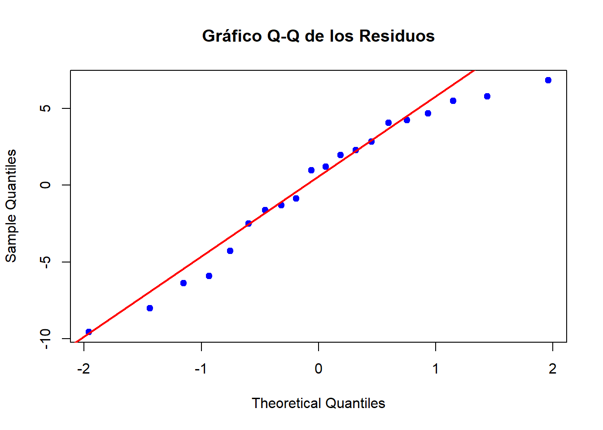

1. Datos
caso3 <- read_excel("C:/Users/User/Downloads/Caso3.xlsx")
colnames(caso3) <- c("ID_Pedido", "Distancia_km", "Num_Paquetes", "Velocidad_Trafico", "Tiempo_Entrega_min")
datatable(caso3,
options = list(pageLength = 5,
autoWidth = TRUE),
caption = "Tabla 1. Datos de Pedidos",
rownames = FALSE,
class = 'display',
escape = FALSE) %>%
formatStyle(
columns = names(caso3),
border = 'solid 1px black',
textAlign = 'center'
) %>%
formatStyle(
colnames(caso3),
border = 'solid 1px black',
textAlign = 'center'
)
El conjunto de datos consta de 4 variables relevantes: Distancia_km,
Num_Paquetes, Velocidad_Trafico y Tiempo_Entrega_min, con un total de 20
observaciones, siendo el ID_Pedido solo un identificador sin relevancia
en el análisis. La situación aborda la operación logística de entrega de
pedidos a domicilio, considerando diversos factores que podrían influir
en el tiempo total de entrega.
1.2 . Contexto y objetivo
En este estudio se busca predecir el tiempo de entrega de pedidos a
domicilio a partir de características asociadas a la operación
logística. La empresa dispone de información sobre diversos factores que
pueden afectar el tiempo total de entrega, como la distancia recorrida,
el número de paquetes transportados y las condiciones del tráfico. Para
modelar esta situación, se plantea un análisis de regresión lineal
múltiple, utilizando como:
Variable dependiente:
- Tiempo_Entrega_min: Tiempo que tarda en completarse
cada entrega (en minutos).
Variables independientes:
Distancia_km: Distancia recorrida desde el punto
de despacho hasta el destino (en kilómetros).
Num_Paquetes: Número de paquetes incluidos en el
pedido.
Velocidad_Trafico: Velocidad promedio del
tráfico en la ruta de entrega (en kilómetros por hora).
Este análisis permitirá comprender cómo influyen estos factores en
los tiempos de entrega y construir un modelo que facilite la predicción
precisa de futuros pedidos, mejorando la eficiencia logística y la
satisfacción del cliente.
2. Ecuación de regresión ajustada e interpretación de los
parámetros
# Ajustar el modelo de regresión lineal múltiple
modelo <- lm(Tiempo_Entrega_min ~ Distancia_km + Num_Paquetes + Velocidad_Trafico, data = caso3)
# Ver el resumen del modelo
summary(modelo)
##
## Call:
## lm(formula = Tiempo_Entrega_min ~ Distancia_km + Num_Paquetes +
## Velocidad_Trafico, data = caso3)
##
## Residuals:
## Min 1Q Median 3Q Max
## -9.565 -2.935 1.095 4.106 6.824
##
## Coefficients:
## Estimate Std. Error t value Pr(>|t|)
## (Intercept) 40.5191 9.0354 4.484 0.000375 ***
## Distancia_km 0.3645 0.2885 1.263 0.224600
## Num_Paquetes 1.7958 0.6703 2.679 0.016459 *
## Velocidad_Trafico -0.1361 0.3236 -0.421 0.679643
## ---
## Signif. codes: 0 '***' 0.001 '**' 0.01 '*' 0.05 '.' 0.1 ' ' 1
##
## Residual standard error: 5.285 on 16 degrees of freedom
## Multiple R-squared: 0.7488, Adjusted R-squared: 0.7017
## F-statistic: 15.9 on 3 and 16 DF, p-value: 4.667e-05
A partir de la salida del modelo de regresión lineal ajustado en R,
obtenemos la siguiente ecuación de la recta ajustada:
\[
\text{Tiempo_Entrega_min} = 40.5191 + 0.3645 \times \text{Distancia_km}
+ 1.7958 \times \text{Num_Paquetes} - 0.1361 \times
\text{Velocidad_Trafico}
\]
En donde:
Parámetro \(b_0 =
40.5191\) (Intercepto): El intercepto de 40.5191
representa el tiempo de entrega base cuando todas las
variables independientes (distancia, número de paquetes y velocidad del
tráfico) son cero. Es decir, si la distancia fuera cero, no hubiera
paquetes y la velocidad del tráfico fuera cero, el tiempo de entrega
sería de 40.5191 minutos.
Parámetro \(b_1 =
0.3645\) (Distancia_km): Este parámetro indica que
por cada kilómetro adicional en la distancia de
entrega, el tiempo de entrega aumentará en promedio 0.3645
minutos.
Parámetro \(b_2 =
1.7958\) (Num_Paquetes): Este parámetro muestra que
por cada paquete adicional en el pedido, el tiempo de
entrega aumentará en promedio 1.7958 minutos.
Parámetro \(b_3 =
-0.1361\) (Velocidad_Trafico): Este parámetro indica que
por cada aumento de 1 km/h en la velocidad del tráfico,
el tiempo de entrega disminuirá en promedio 0.1361
minutos.
3. Pronósticar el tiempo de entrega de un pedido que debe
recorrer 18 kilómetros, lleva 10 paquetes y el tráfico es de
40Km/h.
# Definir los parámetros de la regresión
b0 <- 40.5191
b1 <- 0.3645
b2 <- 1.7958
b3 <- -0.1361
# Vector con los valores de las variables
Distancia_km <- 18
Num_Paquetes <- 10
Velocidad_Trafico <- 40
# Cálculo del tiempo de entrega
tiempo_entrega <- b0 + b1 * Distancia_km + b2 * Num_Paquetes + b3 * Velocidad_Trafico
cat("El tiempo de entrega pronosticado es: ", round(tiempo_entrega, 2), " minutos\n")
## El tiempo de entrega pronosticado es: 59.59 minutos
4. Anova
El ANOVA en regresión lineal se utiliza para analizar cómo las
variables independientes, como Distancia_km, Num_Paquetes y
Velocidad_Trafico, contribuyen a la variabilidad del Tiempo_Entrega_min.
Este análisis descompone la variabilidad total en dos partes: una
explicada por el modelo, a través de las variables predictoras, y otra
atribuida al error, que representa la variabilidad no explicada por el
modelo.
anova <- anova(modelo)
anova
## Analysis of Variance Table
##
## Response: Tiempo_Entrega_min
## Df Sum Sq Mean Sq F value Pr(>F)
## Distancia_km 1 1098.24 1098.24 39.3128 1.117e-05 ***
## Num_Paquetes 1 229.05 229.05 8.1991 0.01126 *
## Velocidad_Trafico 1 4.94 4.94 0.1769 0.67964
## Residuals 16 446.97 27.94
## ---
## Signif. codes: 0 '***' 0.001 '**' 0.01 '*' 0.05 '.' 0.1 ' ' 1
El ANOVA se realizó para analizar cómo las tres variables
independientes (Distancia_km, Num_Paquetes, y Velocidad_Trafico) afectan
el Tiempo_Entrega_min. Al combinar la información de las variables
independientes, se obtuvo una única Suma de Cuadrados de la Regresión
(SCR), Media Cuadrática de la Regresión (MCR) y sus correspondientes
grados de libertad. Estos valores se sumaron para formar la base del
análisis y calcular el valor F, que nos permite evaluar la significancia
global del modelo. A continuación, se presenta la tabla con los
resultados del ANOVA, mostrando cómo las variables y el error
contribuyen a la variabilidad total del tiempo de entrega.
# Suma de Cuadrados Total (SCT)
sct <- sum((caso3$Tiempo_Entrega_min - mean(caso3$Tiempo_Entrega_min))^2) # Suma de Cuadrados Total
# Suma de Cuadrados de la Regresión (SCR)
scr <- sum((fitted(modelo) - mean(caso3$Tiempo_Entrega_min))^2) # Suma de Cuadrados de la Regresión
# Suma de Cuadrados del Error (SCE)
sce <- sct - scr # Suma de Cuadrados del Error
# Grados de libertad
df_reg <- length(coef(modelo)) - 1 # Número de variables predictoras (sin contar el intercepto)
df_error <- length(caso3$Tiempo_Entrega_min) - df_reg - 1
df_total <- length(caso3$Tiempo_Entrega_min) - 1
# Media cuadrática de la regresión (MCR) y media cuadrática del error (MCE)
mcr <- scr / df_reg
mce <- sce / df_error
# Cálculo del valor F
f_value <- mcr / mce
# P-valor asociado al valor F
p_value <- 1 - pf(f_value, df_reg, df_error)
p_value_formatted <- format(p_value, scientific = TRUE, digits = 4)
resultados_anova <- data.frame(
Fuente = c("Regresión (Modelo)", "Error (Residuos)", "Total"),
Suma_Cuadrados = c(scr, sce, sct),
Grados_de_Libertad = c(df_reg, df_error, df_total),
Media_Cuadrática = c(mcr, mce, NA),
Valor_F = c(f_value, NA, NA),
P_Valor = c(p_value_formatted, NA, NA)
)
resultados_anova %>%
kable("html", caption = "Resultados del ANOVA para el Modelo de Regresión", align = "c", digits = 3) %>%
kable_styling(bootstrap_options = c("striped", "hover", "responsive"), full_width = FALSE, position = "center") %>%
column_spec(1, bold = TRUE) %>%
row_spec(0, bold = TRUE, background = "#DBDBDB") %>%
row_spec(1:2, background = "white") %>%
kable_styling(bootstrap_options = "condensed", full_width = FALSE)
Resultados del ANOVA para el Modelo de Regresión
|
Fuente
|
Suma_Cuadrados
|
Grados_de_Libertad
|
Media_Cuadrática
|
Valor_F
|
P_Valor
|
|
Regresión (Modelo)
|
1332.227
|
3
|
444.076
|
15.896
|
4.667e-05
|
|
Error (Residuos)
|
446.973
|
16
|
27.936
|
NA
|
NA
|
|
Total
|
1779.200
|
19
|
NA
|
NA
|
NA
|
5. Prueba Global
La prueba global se realiza para evaluar si las variables
independientes (Distancia_km, Num_Paquetes y Velocidad_Trafico) tienen
un impacto significativo sobre el Tiempo_Entrega_min. A través de esta
prueba comparamos la variabilidad explicada por el modelo con la
variabilidad no explicada (error) y, usando el estadístico F y el
p-valor, determinamos si el modelo en su conjunto es relevante para
predecir el tiempo de entrega.
2. Nivel de significancia
El nivel de significancia (\(\alpha\)) es el umbral que utilizamos para
decidir si podemos rechazar la hipótesis nula. En este
caso, hemos establecido el nivel de significancia en \(\alpha = 0.05\), lo que significa que si el
p-valor calculado es menor que 0.05, rechazamos la
hipótesis nula y concluimos que al menos una de las variables
independientes tiene un efecto significativo sobre el
Tiempo_Entrega_min.
3. Estadístico de prueba
Para esto tenemos en cuenta lo siguiente:
\[
F = \frac{\frac{\text{Suma de Cuadrados de la Regresión
(SCR)}}{\text{df}_{\text{reg}}}}{\frac{\text{Suma de Cuadrados del Error
(SCE)}}{\text{df}_{\text{error}}}}
\] por tanto:
anova_resultado <- anova(modelo)
# Obtener las sumas de cuadrados de la regresión (SCR) y del error (SCE)
scr <- anova_resultado$`Sum Sq`[1] + anova_resultado$`Sum Sq`[2] + anova_resultado$`Sum Sq`[3] # Suma de Cuadrados de la Regresión
sce <- anova_resultado$`Sum Sq`[4] # Suma de Cuadrados del Error
# Obtener los grados de libertad de la regresión (df_reg) y del error (df_error)
df_reg <- anova_resultado$Df[1] + anova_resultado$Df[2] + anova_resultado$Df[3] # Grados de libertad de la regresión
df_error <- anova_resultado$Df[4] # Grados de libertad del error
# Cálculo del valor F
valor_F <- (scr / df_reg) / (sce / df_error)
cat("El valor F calculado es:", round(valor_F, 2), "\n")
## El valor F calculado es: 15.9
Es decir:
\[
F =
\frac{\frac{\text{SCR}}{\text{df}_{\text{reg}}}}{\frac{\text{SCE}}{\text{df}_{\text{error}}}}
= \frac{\frac{1332.227}{3}}{\frac{446.973}{16}} = 15.9
\]
4. Criterio de decisión
# Calcular el valor p asociado al valor F
p_value <- 1 - pf(valor_F, df_reg, df_error)
cat("El valor p asociado al valor F calculado es:", format(p_value, scientific = TRUE), "\n")
## El valor p asociado al valor F calculado es: 4.667362e-05
5. Interpretación
Si el valor p es menor que el nivel de significancia \(\alpha = 0.05\), rechazamos la hipótesis
nula (\(H_0\)) y concluimos que
al menos una de las variables independientes tiene un
impacto significativo sobre el Tiempo_Entrega_min. En
caso contrario, si el valor p es mayor o igual a 0.05, no rechazamos la
hipótesis nula. En nuestro caso, el valor p calculado es \(4.67 \times 10^{-5}\), que es menor que
\(\alpha = 0.05\). Por lo tanto,
rechazamos la hipótesis nula y concluimos que el modelo
es significativo.
6. Conclusión
El valor p asociado al valor F calculado es 4.67e-05, mucho menor que
el nivel de significancia de 0.05, lo que sugiere que el modelo en su
conjunto es relevante, ya que existe una relación significativa entre
las variables independientes y el Tiempo_Entrega_min, lo que indica que
al menos una de las variables tiene un impacto importante en la
predicción del tiempo de entrega.
6. Pruebas individuales sobre las variables
A diferencia de la prueba global, que evalúa el impacto conjunto de
todas las variables, en esta sección analizamos cada variable
independiente por separado. Para cada una, comparamos el valor p con el
nivel de significancia (𝛼= 0.05 para determinar si rechazamos la
hipótesis nula y concluimos que la variable tiene un impacto
significativo sobre el Tiempo_Entrega_min.
# Resumen del modelo
summary_resultado <- summary(modelo)
# Extraer coeficientes, valores p y grados de libertad
coeficientes <- summary_resultado$coefficients
# Nivel de significancia
alpha <- 0.05
hipotesis_table <- data.frame(
Variable = c("Distancia_km", "Num_Paquetes", "Velocidad_Trafico"),
Hipotesis_nula = c("$H_0: \\beta_1 = 0$", "$H_0: \\beta_2 = 0$", "$H_0: \\beta_3 = 0$"),
Hipotesis_alternativa = c("$H_1: \\beta_1 \\neq 0$", "$H_1: \\beta_2 \\neq 0$", "$H_1: \\beta_3 \\neq 0$"),
Nivel_significancia = rep("0.05", 3),
Valor_t = c(coeficientes[2, 3], coeficientes[3, 3], coeficientes[4, 3]), # Valores t
df = c(summary_resultado$df[2], summary_resultado$df[2], summary_resultado$df[2]), # Grados de libertad
Valor_p = c(coeficientes[2, 4], coeficientes[3, 4], coeficientes[4, 4]),
Comparacion = c(
ifelse(coeficientes[2, 4] < alpha, "Valor p < alfa", "Valor p > alfa"),
ifelse(coeficientes[3, 4] < alpha, "Valor p < alfa", "Valor p > alfa"),
ifelse(coeficientes[4, 4] < alpha, "Valor p < alfa", "Valor p > alfa")
),
Decisión = c(
ifelse(coeficientes[2, 4] < alpha, "Rechazamos $H_0$", "No rechazamos $H_0$"),
ifelse(coeficientes[3, 4] < alpha, "Rechazamos $H_0$", "No rechazamos $H_0$"),
ifelse(coeficientes[4, 4] < alpha, "Rechazamos $H_0$", "No rechazamos $H_0$")
),
stringsAsFactors = FALSE
)
hipotesis_table %>%
kable("html", caption = "Prueba de Hipótesis para las Variables Independientes", align = "c") %>%
kable_styling(bootstrap_options = c("striped", "hover"), full_width = FALSE, position = "center")
Prueba de Hipótesis para las Variables Independientes
|
Variable
|
Hipotesis_nula
|
Hipotesis_alternativa
|
Nivel_significancia
|
Valor_t
|
df
|
Valor_p
|
Comparacion
|
Decisión
|
|
Distancia_km
|
\(H_0: \beta_1 = 0\)
|
\(H_1: \beta_1 \neq 0\)
|
0.05
|
1.2632434
|
16
|
0.2246001
|
Valor p > alfa
|
No rechazamos \(H_0\)
|
|
Num_Paquetes
|
\(H_0: \beta_2 = 0\)
|
\(H_1: \beta_2 \neq 0\)
|
0.05
|
2.6791679
|
16
|
0.0164589
|
Valor p < alfa
|
Rechazamos \(H_0\)
|
|
Velocidad_Trafico
|
\(H_0: \beta_3 = 0\)
|
\(H_1: \beta_3 \neq 0\)
|
0.05
|
-0.4205991
|
16
|
0.6796427
|
Valor p > alfa
|
No rechazamos \(H_0\)
|
En el análisis de las pruebas de hipótesis, se observó que el número
de paquetes es la única variable que tiene un impacto significativo en
el tiempo de entrega de los pedidos, con un valor p de 0.0165, lo que
nos permite rechazar la hipótesis nula. Esto sugiere que, a medida que
aumenta el número de paquetes, el tiempo de entrega también se
incrementa de manera notable. Por otro lado, tanto la distancia
recorrida como la velocidad del tráfico no muestran una relación
significativa con el tiempo de entrega, ya que sus valores p son 0.2246
y 0.6796 respectivamente, ambos mayores que el nivel de significancia de
0.05, lo que significa que no hay suficiente evidencia para afirmar que
estas variables influyan de manera relevante en el tiempo de entrega. En
resumen, el número de paquetes emerge como el factor más determinante en
el tiempo de entrega, mientras que la distancia y la velocidad del
tráfico no parecen tener un impacto considerable, al menos dentro del
contexto de este modelo de regresión.
7. Coeficiente de determinación
# Cálculo de las sumas de cuadrados
sce <- sum(anova_resultado$`Sum Sq`[4])
sct <- sum(anova_resultado$`Sum Sq`)
# Número de observaciones y predictores
n <- length(caso3$Tiempo_Entrega_min)
k <- length(coef(modelo)) - 1 # Número de predictores (sin contar el intercepto)
# Cálculo para R^2 ajustado
r_squared_ajustado <- 1 - ((sce / (n - k - 1)) / (sct / (n - 1)))
cat("El valor de R^2 ajustado es:", round(r_squared_ajustado, 4), "\n")
## El valor de R^2 ajustado es: 0.7017
El \(R^2_{\text{ajustado}} =
0.7017\) indica que el 70.17% de la variabilidad
en el Tiempo_Entrega_min es explicada por las variables
del modelo. Este valor refleja un ajuste razonable del modelo,
sugiriendo que las variables seleccionadas tienen un impacto notable en
la predicción del tiempo de entrega. Sin embargo, hay un porcentaje
significativo de la variabilidad (aproximadamente el
29.83%) que no está siendo explicado por el modelo, lo
que sugiere que hay otros factores no contemplados en el análisis.
8. Coeficiente de correlación de Pearson
correlacion <- sqrt(r_squared_ajustado)
cat("El coeficiente de correlación es:",round(correlacion, 4))
## El coeficiente de correlación es: 0.8377
El coeficiente de correlación de 0.8377 indica una relación fuerte y
positiva (directa) entre las variables, esto significa que, en general,
cuando una variable aumenta, el tiempo de entrega también tiende a
aumentar. Aunque este valor refleja una relación lineal entre las
variables, es importante recordar que se trata de una correlación
múltiple, lo que significa que esta relación involucra el comportamiento
conjunto de todas las variables del modelo. Para verificar mejor esta
correlación, se realizará un análisis detallado de cada variable
independiente en relación con la variable dependiente.
# Matriz de correlación entre las variables
correlaciones <- cor(caso3[, c("Distancia_km", "Num_Paquetes", "Velocidad_Trafico", "Tiempo_Entrega_min")])
correlaciones %>%
kable("html", caption = "Matriz de Correlación entre las Variables", align = "c") %>%
kable_styling(bootstrap_options = c("striped", "hover", "condensed"), full_width = FALSE, position = "center")
Matriz de Correlación entre las Variables
|
|
Distancia_km
|
Num_Paquetes
|
Velocidad_Trafico
|
Tiempo_Entrega_min
|
|
Distancia_km
|
1.0000000
|
0.8236120
|
0.8226198
|
0.7856618
|
|
Num_Paquetes
|
0.8236120
|
1.0000000
|
0.8415693
|
0.8505744
|
|
Velocidad_Trafico
|
0.8226198
|
0.8415693
|
1.0000000
|
0.7242845
|
|
Tiempo_Entrega_min
|
0.7856618
|
0.8505744
|
0.7242845
|
1.0000000
|
En la matriz de correlación se puede observar que todas las
relaciones entre las variables independientes y la variable dependiente,
Tiempo_Entrega_min, son directas, lo que significa que a medida que
aumenta el valor de una variable independiente, el tiempo de entrega
también tiende a aumentar.
La relación entre Distancia_km y Tiempo_Entrega_min tiene una
correlación de 0.7857, lo que indica una relación positiva moderada a
fuerte, esto significa que, en general, cuando la distancia recorrida
aumenta, también lo hace el tiempo de entrega, lo cual tiene sentido en
términos logísticos.
Con respecto a Num_Paquetes y Tiempo_Entrega_min, la correlación es
aún más fuerte (0.8506), lo que refleja una relación directa muy fuerte,
a medida que el número de paquetes en el pedido crece, el tiempo de
entrega aumenta significativamente, lo que es esperado debido al mayor
esfuerzo logístico requerido para manejar más paquetes.
Por último, la relación entre Velocidad_Trafico y Tiempo_Entrega_min
tiene una correlación de 0.7243, lo que indica una relación positiva
moderada a fuerte, aunque no tan fuerte como las otras dos relaciones,
aún muestra que un aumento en la velocidad del tráfico puede llevar a un
mayor tiempo de entrega, aunque con un impacto más pequeño en
comparación con las otras variables.
En resumen, todas las correlaciones observadas son directas, lo que
significa que un aumento en las variables independientes tiende a
resultar en un aumento del tiempo de entrega, aunque la intensidad de la
relación varía entre ellas.
9. Prueba de hipótesis para coeficiente de
correlación
# Pruebas de correlación de Pearson entre las variables
cor_test_1 <- cor.test(caso3$Distancia_km, caso3$Tiempo_Entrega_min, method = "pearson")
cor_test_2 <- cor.test(caso3$Num_Paquetes, caso3$Tiempo_Entrega_min, method = "pearson")
cor_test_3 <- cor.test(caso3$Velocidad_Trafico, caso3$Tiempo_Entrega_min, method = "pearson")
# Tabla de resultados de la prueba de hipótesis para cada par de variables
hipotesis_table_correlacion <- data.frame(
Variable_1 = c("Distancia_km", "Num_Paquetes", "Velocidad_Trafico"),
Variable_2 = rep("Tiempo_Entrega_min", 3),
Hipotesis_nula = c("$H_0: \\rho = 0$", "$H_0: \\rho = 0$", "$H_0: \\rho = 0$"),
Hipotesis_alternativa = c("$H_1: \\rho \\neq 0$", "$H_1: \\rho \\neq 0$", "$H_1: \\rho \\neq 0$"),
Nivel_significancia = rep("0.05", 3),
Valor_t = c(cor_test_1$statistic, cor_test_2$statistic, cor_test_3$statistic),
df = rep(cor_test_1$parameter, 3), # Grados de libertad
Valor_p = c(cor_test_1$p.value, cor_test_2$p.value, cor_test_3$p.value),
Comparacion = c(
ifelse(cor_test_1$p.value < alpha, "Valor p < alfa", "Valor p > alfa"),
ifelse(cor_test_2$p.value < alpha, "Valor p < alfa", "Valor p > alfa"),
ifelse(cor_test_3$p.value < alpha, "Valor p < alfa", "Valor p > alfa")
),
Decisión = c(
ifelse(cor_test_1$p.value < alpha, "Rechazamos $H_0$", "No rechazamos $H_0$"),
ifelse(cor_test_2$p.value < alpha, "Rechazamos $H_0$", "No rechazamos $H_0$"),
ifelse(cor_test_3$p.value < alpha, "Rechazamos $H_0$", "No rechazamos $H_0$")
),
stringsAsFactors = FALSE
)
hipotesis_table_correlacion <- hipotesis_table_correlacion[, -2]
library(knitr)
library(kableExtra)
kable(hipotesis_table_correlacion, "html", caption = "Prueba de Hipótesis para los Coeficientes de Correlación de Pearson", align = "c") %>%
kable_styling(bootstrap_options = c("striped", "hover"), full_width = FALSE, position = "center")
Prueba de Hipótesis para los Coeficientes de Correlación de Pearson
|
Variable_1
|
Hipotesis_nula
|
Hipotesis_alternativa
|
Nivel_significancia
|
Valor_t
|
df
|
Valor_p
|
Comparacion
|
Decisión
|
|
Distancia_km
|
\(H_0: \rho = 0\)
|
\(H_1: \rho \neq 0\)
|
0.05
|
5.387937
|
18
|
0.0000404
|
Valor p < alfa
|
Rechazamos \(H_0\)
|
|
Num_Paquetes
|
\(H_0: \rho = 0\)
|
\(H_1: \rho \neq 0\)
|
0.05
|
6.862507
|
18
|
0.0000020
|
Valor p < alfa
|
Rechazamos \(H_0\)
|
|
Velocidad_Trafico
|
\(H_0: \rho = 0\)
|
\(H_1: \rho \neq 0\)
|
0.05
|
4.456669
|
18
|
0.0003048
|
Valor p < alfa
|
Rechazamos \(H_0\)
|
Los resultados de la prueba de hipótesis para los coeficientes de
correlación de Pearson entre las variables independientes y la variable
dependiente muestran que todas las variables, Distancia_km, Num_Paquetes
y Velocidad_Trafico, tienen un valor p mucho menor que el nivel de
significancia estándar de 0.05. Esto indica que todas las variables
tienen una relación lineal significativa con el Tiempo_Entrega_min.
La correlación entre Distancia_km y Tiempo_Entrega_min es fuerte, con
un valor t de 5.39 y un valor p de 0.0000404, lo que muestra una
relación positiva significativa. De manera similar, Num_Paquetes también
tiene una correlación significativa, con un valor t de 6.86 y un valor p
de 0.0000020. Finalmente, Velocidad_Trafico también tiene una relación
significativa, aunque con una correlación un poco más baja en
comparación con las otras dos variables, mostrando un valor t de 4.46 y
un valor p de 0.00003048.
Aunque todas las variables muestran una relación significativa con el
tiempo de entrega, es importante notar que, en la prueba de hipótesis de
los coeficientes en el modelo de regresión, solo Num_Paquetes fue
estadísticamente significativa. Esto puede sugerir que, cuando se
consideran todas las variables de manera conjunta, el impacto de
Distancia_km y Velocidad_Trafico se ve atenuado por la presencia de
otras variables en el modelo, mientras que Num_Paquetes sigue siendo el
factor más relevante para predecir el tiempo de entrega.
10. Validación de los supuestos
Linealidad
Para validar el supuesto de linealidad en nuestro modelo de
regresión, utilizaremos un gráfico que muestra los residuos en función
de los ajustes (valores predichos), si la relación entre las variables
independientes y la variable dependiente es lineal, los puntos en el
gráfico deben distribuirse aleatoriamente alrededor de la línea
horizontal en cero, sin formar patrones específicos, un patrón
sistemático en este gráfico podría indicar que la relación no es lineal,
lo que sugeriría que el modelo de regresión lineal no es el más adecuado
para los datos.
# Gráfico de residuos vs ajustes para verificar la linealidad
plot(modelo$fitted.values, modelo$residuals,
main = "Residuos vs Ajustes",
xlab = "Ajustes (Valores Predichos)",
ylab = "Residuos",
pch = 16, col = "blue")
abline(h = 0, col = "red", lwd = 2)

Como se observa, en el gráfico de Residuos vs Ajustes, los puntos se
distribuyen de manera aleatoria alrededor de la línea horizontal en
cero, sin un patrón claro, lo que sugiere que la relación entre las
variables independientes y la variable dependiente es probablemente
lineal. No se observan patrones ni dispersión creciente o decreciente,
lo que apoya la validez del supuesto de linealidad en el modelo de
regresión. Esto también se refleja en los resultados de la correlación
de Pearson, donde todas las variables independientes muestran
correlaciones directas con el tiempo de entrega, lo que refuerza la
relación lineal entre ellas y la variable dependiente.
Normalidad
# Obtener los residuos del modelo
residuos <- residuals(modelo)
# Graficar el gráfico Q-Q
qqnorm(residuos, main = "Gráfico Q-Q de los Residuos", col = "blue", pch = 19)
qqline(residuos, col = "red", lwd = 2)

En el gráfico Q-Q de los residuos, los puntos siguen bastante bien la
línea roja, lo que sugiere que los residuos se distribuyen de forma
normal. Sin embargo, se puede notar que en las colas (extremos), los
puntos están un poco más alejados de la línea, lo que podría indicar una
ligera desviación de la normalidad en esas zonas. A pesar de esto, el
ajuste general sigue siendo adecuado, lo que sugiere que el supuesto de
normalidad no se ve afectado de manera significativa. Lo anterior, lo
podemos verficar en mayor medida con la prueba de Shapiro Wilk para los
residuos, dado que contamos con una muestra inferior a los 50 datos.
1. Formulación de hipótesis
- Hipótesis nula (\(H_0\)): Los residuos siguen una
distribución normal.
- Hipótesis alternativa (\(H_1\)): Los residuos no siguen una
distribución normal.
2. Nivel de significancia
Se ha utilizado un nivel de significancia de \(\alpha = 0.05\).
3-4. Estadístico de prueba y valor p
# Realizar el test de Shapiro-Wilk
shapiro_test <- shapiro.test(residuos)
shapiro_test
##
## Shapiro-Wilk normality test
##
## data: residuos
## W = 0.94758, p-value = 0.3319
5. Comparación de valor p y nivel de
significancia
Si el \(p\)-valor es igual a 0.3319
y el nivel de significancia \(\alpha\)
es 0.05, entonces comparamos: \(p\)-valor > \(\alpha\), lo que nos lleva a concluir que
no rechazamos la hipótesis nula (\(H_0\)).
6. Conclusión
El resultado del test de Shapiro-Wilk para los residuos muestra un
valor W = 0.94758 y un p-value = 0.3319. Esto indica que, dado el
p-valor mayor a 0.05, no tenemos evidencia suficiente para rechazar la
hipótesis nula de que los residuos siguen una distribución normal. En
otras palabras, podemos concluir que no hay indicios de que los residuos
no sean normales, lo cual apoya el supuesto de normalidad en el modelo
de regresión.
Multicolinealidad
Para detectar la multicolinealidad, utilizaremos una matriz de
correlación, que nos ayudará a identificar si alguna de las variables
independientes presenta una alta correlación con otras, si se encuentran
correlaciones superiores a 0.7 o menores a -0.7, podría ser un indicio
de multicolinealidad.
correlaciones %>%
kable("html", caption = "Matriz de Correlación entre las Variables", align = "c") %>%
kable_styling(bootstrap_options = c("striped", "hover", "condensed"), full_width = FALSE, position = "center")
Matriz de Correlación entre las Variables
|
|
Distancia_km
|
Num_Paquetes
|
Velocidad_Trafico
|
Tiempo_Entrega_min
|
|
Distancia_km
|
1.0000000
|
0.8236120
|
0.8226198
|
0.7856618
|
|
Num_Paquetes
|
0.8236120
|
1.0000000
|
0.8415693
|
0.8505744
|
|
Velocidad_Trafico
|
0.8226198
|
0.8415693
|
1.0000000
|
0.7242845
|
|
Tiempo_Entrega_min
|
0.7856618
|
0.8505744
|
0.7242845
|
1.0000000
|
Distancia_km ~ Num_Paquetes: Con un valor de 0.8236, la
asociación lineal es alta, lo que sugiere una fuerte relación entre
estas dos variables.
Distancia_km ~ Velocidad_Trafico: El valor de 0.8226 también
indica una alta correlación, lo que muestra una asociación lineal
considerable entre estas dos variables.
Distancia_km ~ Tiempo_Entrega_min: El valor de 0.7857 sugiere
igualmente una correlación alta, lo que implica una relación lineal
significativa con la variable dependiente.
De esta manera, todas las variables independientes tienen
asociaciones lineales altas entre sí, lo que podría indicar
multicolinealidad. Esto es importante porque la multicolinealidad puede
afectar la interpretación de los coeficientes en un modelo de regresión,
ya que estas variables podrían estar explicando en gran parte lo
mismo.
Autocorrelación
1. Formulación de hipótesis
- Hipótesis nula (\(H_0\)): No existe autocorrelación
en los residuos (es decir, los residuos son independientes).
- Hipótesis alternativa (\(H_1\)): Existe autocorrelación en
los residuos (los residuos no son independientes).
2. Nivel de significancia
Se ha utilizado un nivel de significancia de \(\alpha = 0.05\).
3-4. Estadístico de prueba y valor p
# Realizar el test de Durbin-Watson
dw_test <- dwtest(modelo, alternative = "two.sided")
dw_test
##
## Durbin-Watson test
##
## data: modelo
## DW = 1.9226, p-value = 0.9398
## alternative hypothesis: true autocorrelation is not 0
5. Comparación de valor p y nivel de
significancia
Dado que el \(p\)-valor es \(0.9398\) y el nivel de significancia es
\(\alpha = 0.05\), comparamos ambos
valores y concluimos que, ya que \(p\)-valor > \(\alpha\), no rechazamos la hipótesis nula
(\(H_0\)).
6. Conclusión
La prueba de Durbin-Watson con un p-valor de 0.9398 sugiere que no
rechazamos la hipótesis nula de que los residuos se comportan de manera
independiente. Como el p-valor es mayor que el nivel de significancia de
0.05, no hay suficiente evidencia para indicar que los residuos estén
correlacionados, lo que significa que se distribuyen de forma
independiente, validando así este supuesto en el modelo de
regresión.
Homocedasticidad
Para verificar la homocedasticidad, realizaremos dos pruebas: la de
Godfrey y la de Breusch-Pagan. Ambas pruebas sirven para evaluar si la
varianza de los residuos es constante, lo que es clave para validar el
supuesto de homocedasticidad en un modelo de regresión. La diferencia
principal entre ellas es que la prueba de Godfrey se enfoca más en la
autocorrelación de los residuos, mientras que la prueba de Breusch-Pagan
evalúa si la varianza de los residuos cambia sistemáticamente con los
valores predichos. Al aplicar ambas pruebas, podemos tener más seguridad
de que no existe heterocedasticidad en nuestro modelo.
1. Formulación de hipótesis
- Hipótesis nula (\(H_0\)): Varianza de los residuos
es constante (homocedasticidad).
- Hipótesis alternativa (\(H_1\)): Varianza de los residuos
no es constante (heterocedasticidad).
2. Nivel de significancia
Se ha utilizado un nivel de significancia de \(\alpha = 0.05\).
3-4. Estadístico de prueba y valor p
Breusch-Pagan
##
## studentized Breusch-Pagan test
##
## data: modelo
## BP = 0.40219, df = 3, p-value = 0.9398
Godfrey
##
## Breusch-Godfrey test for serial correlation of order up to 1
##
## data: modelo
## LM test = 0.17749, df = 1, p-value = 0.6735
5. Comparación de valor p y nivel de
significancia
Breusch-Pagan
Si el \(p\)-valor es \(0.9398\) y el nivel de significancia \(\alpha = 0.05\), comparamos ambos valores.
Dado que \(p\)-valor > \(\alpha\), concluimos que no rechazamos la
hipótesis nula (\(H_0\)).
Godfrey
Dado que el \(p\)-valor es \(0.6735\) y el nivel de significancia es
\(\alpha = 0.05\), comparamos ambos
valores y concluimos que, ya que \(p\)-valor > \(\alpha\), no rechazamos la hipótesis nula
(\(H_0\)).
6. Conclusión
Breusch-Pagan
La prueba de Breusch-Pagan con un \(p\)-valor de \(0.9398\) sugiere que no rechazamos la
hipótesis nula de homocedasticidad. Dado que el p-valor es mayor que el
nivel de significancia de 0.05, no hay suficiente evidencia para indicar
que existe heterocedasticidad en los residuos, lo que implica que la
varianza de los residuos se mantiene constante a lo largo de las
observaciones y valida este supuesto en el modelo de regresión.
Godfrey
La prueba de Godfrey, con un \(p\)-valor de \(0.6735\) y un nivel de significancia de
\(\alpha = 0.05\), indica que no hay
evidencia suficiente para rechazar la hipótesis nula. Esto sugiere que
no hay autocorrelación en los residuos del modelo, ya que el \(p\)-valor es mayor que el nivel de
significancia. Por lo tanto, podemos concluir que los residuos se
comportan de manera independiente, lo que valida este supuesto en el
modelo de regresión.
